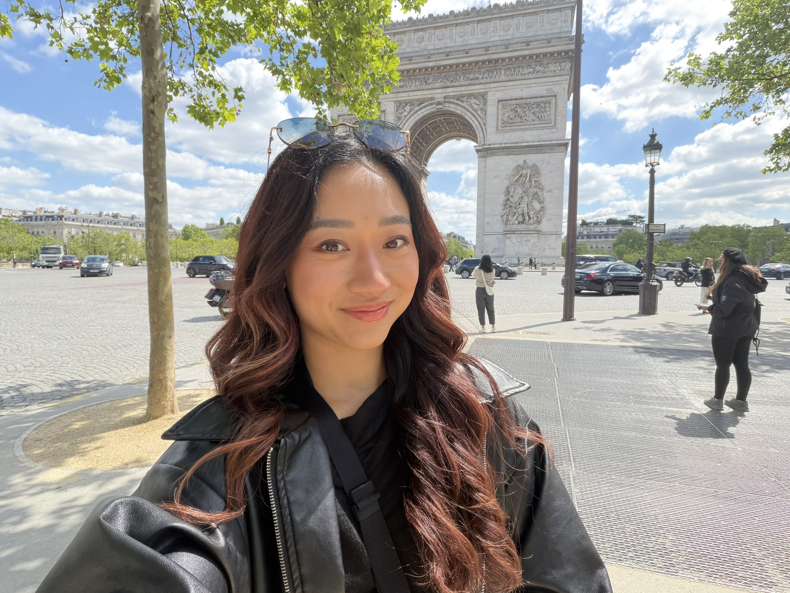

Hi, I'm Connie, a Product Designer in the Bay Area
My design journey started with art. I entered several art competitions growing up and won a few, which sparked an early interest in creative work. That interest carried into graphic design, where I found the same creative expression paired with more practical career flexibility.
As I took on more graphic design work, I recognized what drew me in wasn't just the visual side — it was the problem-solving beneath it. I found myself considering how I would approach a website differently, or why a particular flow didn't feel right. That realization led me to UI/UX, where I could apply that same creativity to solving real problems for real people.
That problem-solving mindset continues to shape how I design today. I believe good UX is invisible — the interface should never get in the way of what a user needs — and good UI is clear enough to speak for itself. Every decision I make, from AI-driven search to a benefits portal, is guided by that same intention.
Let's connect
Feel free to reach out about a project, an opportunity, or just to say hi!